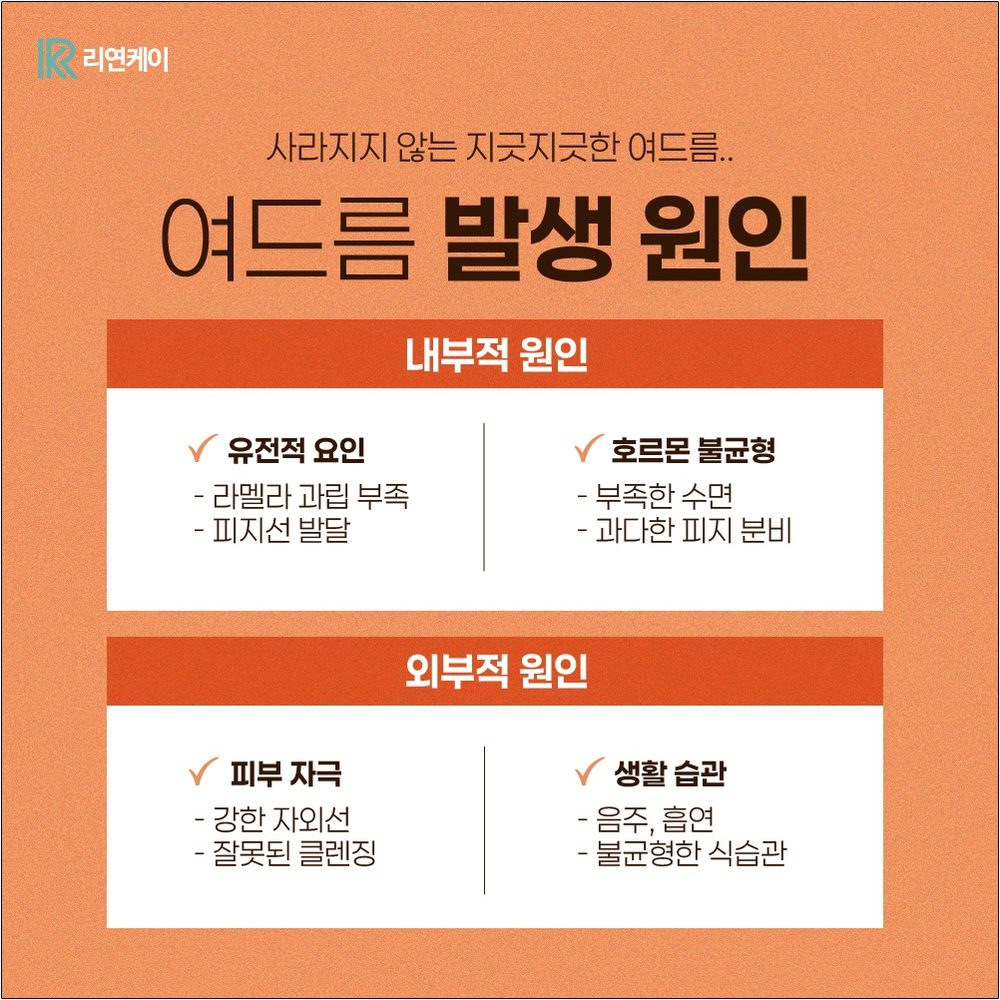
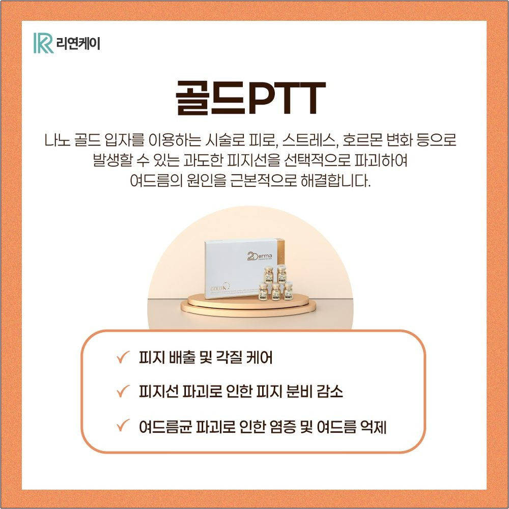
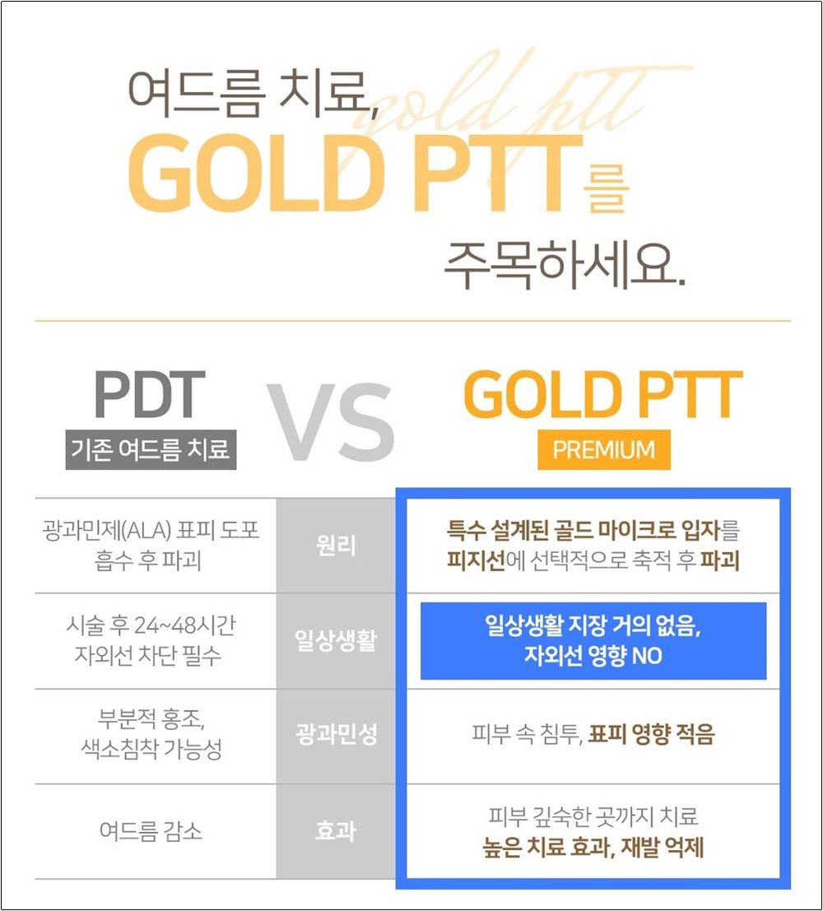
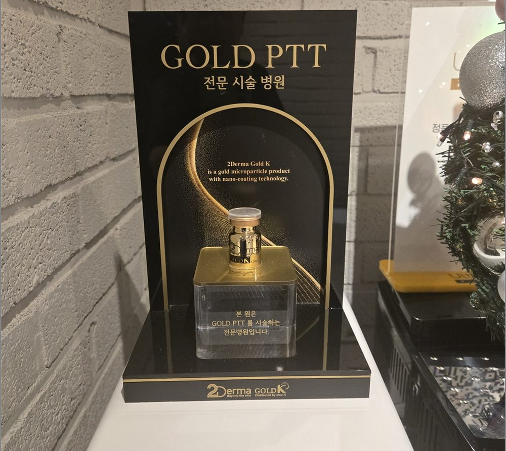
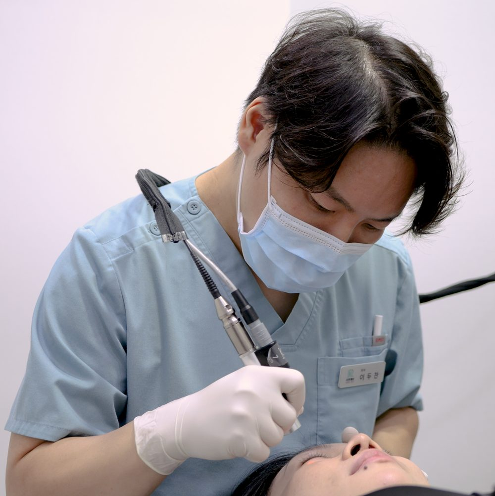
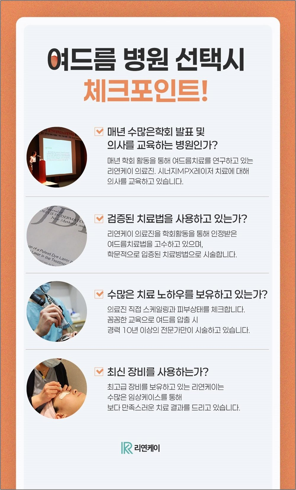
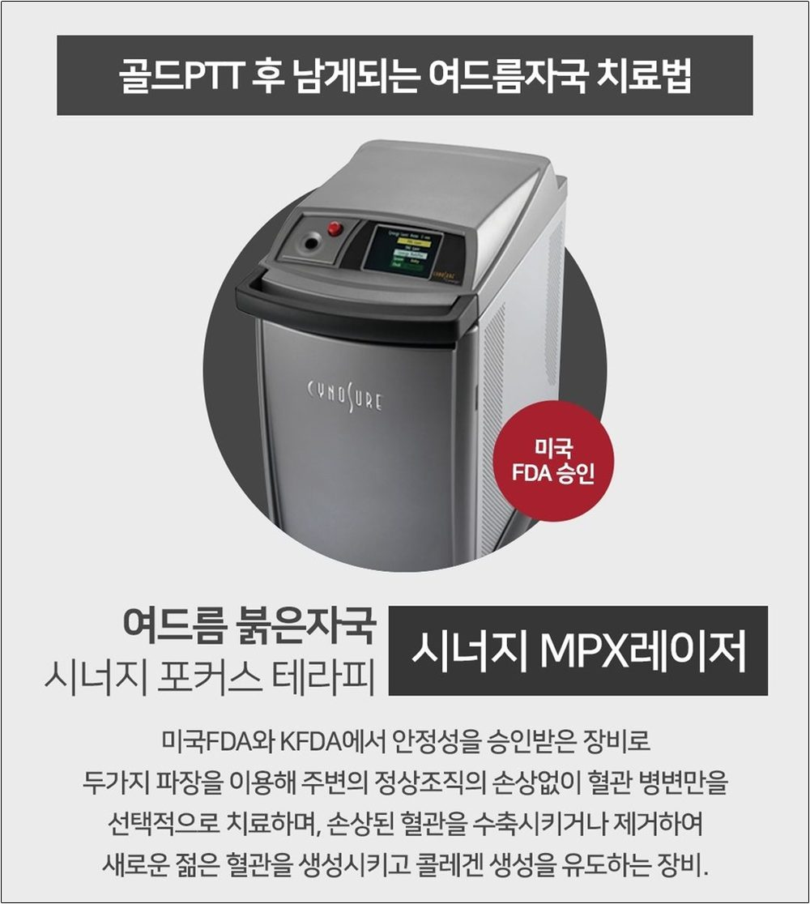

여드름이 올라왔을 때, 자고 나면 끝일까요?
가끔 한두 개 올라오는 여드름이라면 가벼운 압출과 관리로 정리되는 경우도 있어요. 하지만 같은 자리에 좁쌀이 반복되거나 붉게 부어오르는 화농성 여드름이 계속된다면 치료 방향을 한 번 점검해 볼 때예요. 압구정 여드름 치료를 알아보는 분들을 위해 골드PTT를 포함한 치료 선택 기준을 차분히 정리해 드릴게요.
여드름은 피지 분비, 모공 막힘, 여드름균, 염증 반응 등 여러 요인이 겹쳐서 생겨요. 그래서 같은 여드름처럼 보여도 사람마다 원인과 상태가 달라요.
특히 좁쌀 여드름과 화농성 여드름은 반복되기 쉬운 편이라, 눈에 보이는 여드름을 그때그때 정리하는 것만으로는 아쉬울 수 있어요. 피부 상태를 먼저 진단하고, 나에게 맞는 치료 방법을 정하는 과정이 중요해요.
여드름 치료에는 여러 가지 방법이 있고, 어떤 방법이 맞는지는 여드름의 종류, 염증 정도, 피부 타입, 생활 습관에 따라 달라져요. 의료진과 상담해서 정하시길 권해요.

골드PTT는 특수 설계된 금 나노 입자를 초음파로 피부 속에 도포하고, 800nm대 이상의 특정 파장 레이저를 조사하는 방식의 치료예요. 여드름의 원인과 관련된 피지선과 여드름균에 작용하도록 설계되었다고 알려져 있어요.
약 복용 없이 진행할 수 있다는 점, 기존 광역동 치료(PDT)와 달리 시술 후 자외선 차단 제한 부담이 적다고 알려진 점 때문에 관심을 갖는 분들이 많아요. 다만 치료 반응과 회복 정도는 사람마다 다르고, 모든 여드름에 같은 방식이 맞는 것은 아니에요.
※ 치료 횟수와 간격, 기대할 수 있는 변화는 피부 상태에 따라 달라서 상담 때 안내해 드려요.



압출을 해도 금방 다시 올라와서 지치셨다면 피부 상태를 진단받아 보세요.
염증이 반복되면 자국이 남을 수 있어서 치료 계획을 세워 두는 것이 좋아요.
복용 중인 약이나 건강 상태에 따라 선택할 수 있는 치료가 달라질 수 있어요. 상담 때 편하게 말씀해 주세요.
※ 치료 적합 여부는 진단 후 의료진이 판단합니다.
여드름 치료는 장비만큼 압출과 관리 과정도 중요해요. 리연케이의원에서는 경력 10년 이상의 관리사가 압출, 초음파를 이용한 흡수 관리, 클렌징까지 직접 진행하고 있어요.
피부 자극을 줄이면서 꼼꼼하게 관리하는 데 신경 쓰고 있고, 관리 과정에서 궁금한 점은 언제든 편하게 물어봐 주세요.
골드PTT는 병원마다 사용량과 진행 방식이 다를 수 있어서, 시술 전에 어떻게 진행되는지 확인해 보시는 것이 좋아요. 리연케이의원의 진행 방식을 안내해 드릴게요.
시술 때 골드PTT 1병을 모두 사용해요.
상담부터 시술, 마무리까지 담당 의사가 직접 진행해요. 중간에 궁금한 점이 있으면 바로 물어보실 수 있어요.
시너지MPX 등의 장비를 사용해 피부 상태에 맞춰 레이저를 조사해요.

※ 치료 반응과 결과는 개인에 따라 다를 수 있어요.
여드름은 종류도 다양하고 치료법도 다양해서 의료진의 경험이 중요해요. 리연케이의원의 의료진은 10년 이상 여드름 치료 케이스를 쌓아 왔고, 직접 상담하고 피부 상태를 진단한 뒤 맞춤 치료 계획을 안내해 드려요.
레이저 장비도 함께 살펴볼 부분이에요. 리연케이의원은 시너지MPX, 제네시스, MCL31, 피코슈어 등의 장비를 보유하고 있고, 피부 상태에 맞춰 선택해요. 병원을 비교할 때는 어떤 장비를 쓰는지, 왜 그 치료를 권하는지 설명을 들어 보세요.


현재 여드름 상태와 평소 관리 습관, 복용 중인 약을 함께 확인해요.
치료 방법, 횟수, 기대할 수 있는 변화와 한계, 시술 후 나타날 수 있는 반응을 설명해 드려요.
여드름이 가라앉은 뒤의 붉은 자국과 흉터까지 이어서 살펴봐요.
여드름 치료가 끝난 뒤에는 붉은 자국이 남는 경우가 있어요. 염증이 있던 자리에 미세 혈관이 확장되어 붉게 보이는 것인데, 시간이 지나면서 색소 침착으로 이어지거나 패인 흉터로 남을 수도 있어요.
그래서 여드름 치료와 함께 붉은 자국과 흉터 관리도 같이 상담해 보시길 권해요. 리연케이의원에서는 여드름 압출부터 좁쌀·화농성 여드름 치료, 붉은 자국과 여드름 흉터 상담까지 이어서 확인할 수 있어요.
일시적인 붉은기, 따가움, 건조함 등이 나타날 수 있어요. 대부분 시간이 지나며 가라앉지만 개인차가 있어요.
복용 중인 약, 임신·수유 여부, 피부 질환이나 알레르기 병력, 최근 받은 시술이 있다면 미리 말씀해 주세요.
여드름 치료 비용은 치료 방법과 횟수, 피부 상태에 따라 달라져요. 정확한 비용은 상담 후 안내해 드려요.
금 나노 입자를 초음파로 피부에 도포한 뒤 800nm대 이상의 특정 파장 레이저를 조사해, 피지선과 여드름균에 작용하도록 설계된 여드름 치료예요.
반복되는 좁쌀 여드름이나 화농성 여드름처럼 압출만으로 관리가 어려운 경우 상담해 볼 수 있어요. 적합 여부는 진단 후 의료진이 판단해요.
골드PTT는 약 복용 없이 진행할 수 있는 치료로 알려져 있어요. 다만 개인의 피부 상태에 따라 다른 치료를 함께 안내드릴 수 있어요.
기존 광역동 치료에 비해 자외선 차단 제한 부담이 적다고 알려져 있지만, 시술 후 붉은기나 건조함이 있을 수 있어요. 안내받은 주의사항을 지켜 주세요.
골드PTT 1병을 모두 사용하고, 상담부터 시술, 마무리까지 담당 의사가 직접 진행해요. 시너지MPX 등의 장비를 사용해요.
붉은 자국과 흉터 관리도 상담 가능해요. 자국의 종류와 정도에 맞춰 방법을 안내해 드려요.
여드름은 자국이 깊어지기 전에, 내 피부에 맞는 방법으로 살펴보세요.
압구정 여드름 치료가 고민이라면 리연케이의원에서 피부 상태를 확인하고 맞춤 치료 계획을 상담해 보세요. 스킨부스터 같은 피부 컨디션 관리가 궁금하다면 스킨부스터 종류·가격·통증 총정리도 참고해 주세요.
※ 본 글은 일반적인 정보 제공을 위한 것이며, 치료 효과와 결과는 개인에 따라 다를 수 있습니다. 정확한 진단과 치료 여부는 의료진과의 상담을 통해 결정해 주세요.